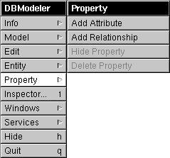

Release 3.3 Copyright ©1995 by NeXT Computer, Inc. All Rights Reserved.
| 3 |
Database Models
| A database model is a file that defines, in Entity-Relationship terms, the organization of data in a database server. Using the models that you introduce into your application, the Database Kit can automatically create and configure objects that will store data. You build models from the entities and attributes that are declared by an adaptor (as gotten from the server's data dictionary).
Designing a model is separate from the task of creating a database application. In practice, you create your model files first, typically by using the DBModeler application. (An ASCII model file format is also provided so you can create--and modify--model files with a text editor, or develop programs that produce model files.) Once your models are in place, you use Project Builder to specify the models you want to use in your application. This chapter describes model files, the DBModeler application, and the ASCII model file format. The descriptions here rely heavily on the concepts and terms presented in Chapter 2, "Entity-Relationship Modeling." |
| Model Files |
| There are two types of model files: |
| Archive models are in a binary format and have the extension ".dbmodel". | ||
| ASCII models are in ASCII and have the extension ".dbmodela". |
| Only archive models can be used in your application--ASCII models must be converted to archive format before they can be used. However, the conversion from ASCII to archive is done automatically when you compile your application. (As described in the next chapter, ASCII models can be used in Interface Builder.)
You can store your model files in the Databases subdirectory of a Library directory, or you can copy them into your application's project directory (this is described in a later chapter). When the Database Kit searches for a model, it does so by the model's name--in other words without reference to the file's path or extension. Models in the project directory precede those in the library directories. The search through the libraries is done in the usual order: ~/Library, /LocalLibrary, /NextLibrary.
Example Models Example model files (in archive format) can be found in the directory /NextDeveloper/Examples/DatabaseKit/Models. The OracleDemo.dbmodel model uses the entities and properties defined by the Oracle adaptor; the SybaseDemo.dbmodel model uses the Sybase adaptor. |
| Choosing a Modeling Approach |
| Before you can begin building your model, you have to decide whether to use DBModeler or create an ASCII model file. DBModeler lets you create the model graphically and so is a bit more natural. However, some database servers provide Entity-Relationship graphs of the data storage systems that they provide; replicating a huge graph through DBModeler can be an extremely slow process. In such a case, typing (or otherwise manufacturing) an ASCII model file may be easier.
Whichever method you choose, you should note that DBModeler can read and write both archive and ASCII models, and can translate between the two formats. For example, you can use DBModeler to read an archive model and write it as an ASCII file. |
| DBModeler |
| The DBModeler application is located in the /NextDeveloper/Apps directory and is represented by the following icon: |
| Figure 19. DBModeler's Application Icon
You launch the application by double-clicking the icon, or by double-clicking an existing model file (archive or ASCII). Model files are represented by this icon: |
| Figure 20. Model File Icon
When the application is launched, the main menu appears: |
| Figure 21. DBModeler's Main Menu
Setting Application Preferences The preferences panel is displayed when you choose the Preferences command from the Info menu: |
| Figure 22. The Info Menu and Preferences Panel
The Default Adaptor browser lists the names of the adaptors that are available. The selection that you make doesn't dictate the adaptor that's used when you're creating your model, it simply primes a subsequent panel for the selection. The "Smart-Joins Enabled" checkbox is unimplemented and should be ignored. The "AutoNaming of Relationships Enabled" checkbox determines whether the relationships that you create will automatically be given a name in the form "toDestinationEntity".
File Operations The Model menu, shown below, lets you perform the expected file operations: |
| Figure 23. Model Menu
When you choose Open, a standard Open panel is displayed from which you select a model file. Opening an existing model file or creating a new one causes the model window to appear. The model window is described later in this chapter. DBModeler's Save panel features a pop-up list that lets you select the format (archive or ASCII) that's used to write the model to a file. The Save panel, with the pop-up list exploded, is shown in Figure 24: |
 |
| Figure 24. The Save Panel with the Format Pop-up List
Saving an existing ASCII model as an archive performs the necessary conversion that prepares the model for use in an application. Conversely, you can open an archive model and save it as ASCII (and so edit the file directly, for example). |
| Warning: | When you convert the format of an existing model file, the requisite extension is appended to the filename--extension and all--that's shown in the Name text field. You must remove the old extension before saving a model in a new format. | |
| Creating a New Model | ||
| To create a new model, you select the New command in the Model menu. This brings up the New Model panel: | ||
| Figure 25. The New Model Panel | ||
| The Adaptors browser lets you choose the adaptor that the model will use. | ||
| If the Default Model checkbox is checked, the application asks the adaptor to supply default model information. For example, the Oracle and Sybase adaptors provide lists of entity and attribute names, as gotten from the server's data dictionary. Most adaptors have to form a connection to the server to get this information; if so, the adaptor login panel will appear (this is true of the Oracle and Sybase adaptors). | ||
| If you uncheck the Default Model checkbox, you can proceed directly to the model window and create the model from scratch. It's possible to create a model without asking the adaptor for its default model, but you should make sure that the names of the entities and attributes that you specify will be recognized by the adaptor. | ||
| The Model Window | ||
| When you open a model file or create a new model, the model window appears. Shown below is the model window for the OracleDemo model: | ||
| Figure 26. The Model Window | ||
| The Adaptor and Login String Fields | ||
| The Adaptor text field names the model's adaptor. | ||
| The Login String field gives information that's used to identify and log into the server. The form that the login string takes depends on the adaptor that you're using. The Oracle and Sybase login string formats are described in the section "Login String Formats" at the end of this chapter. | ||
| The adaptor name and login string values are taken from the model that you opened or, if you're creating a new model, from the information that you typed in the server's login panel. If, in creating a new model, you didn't select the default model and so didn't have to login to the server, the login string will be "N/A". | ||
| You can change the information in these two text fields. Changing the adaptor name will cause all subsequent data queries from within DBModeler to be directed to the new adaptor. The adaptor name and login information is also used outside of DBModeler; for example, when you test your interface in Interface Builder, a login panel is presented by the adaptor and with the login string that you supply here. | ||
| The Entities Browser | ||
| The Entities browser in the middle of the model window displays the entities that you have to work with. If you're creating a model from scratch, the browser will be empty; in this case, you would add entities through the Add Entity or Choose Entities command, described later. | ||
| When you select an entity in the browser (and you can only select one at a time), the bottom half of the model window is filled with entity-specific information: | ||
| Figure 27. Entity Information | ||
| The Name field gives the name of the entity as it will appear in your application. Changing this name causes the name in the browser to change as well. The Internal Name field supplies the name of the entity as it's known to the adaptor. You're playing with fire if you change an entity's internal name. | ||
| The Properties browser contains a list of the entity's attributes and relationships, which, collectively, the Database Kit calls properties. Whether a particular property is an attribute or relationship isn't signified here. | ||
| Manipulating Entities | ||
| The commands in the Entity menu let you add, hide, and delete entities, and choose new entities from the adaptor: | ||
| Figure 28. The Entity Menu | ||
| Adding and Deleting Entities | ||
| Adding an entity causes a new entity, tentatively named EntityN (where N is an integer that's incremented at each addition), to be added to the list of entities displayed in the entity browser. A new entity has no correspondence to an actual entity supplied by the adaptor until its internal name is set to a recognized value. | ||
| The Delete Entity command removes the currently selected entity from your model. | ||
| Choosing Entities | ||
| The Choose Entities command brings up the "Build Model from Selected Tables" panel: | ||
| Figure 29. The "Build Model from Selected Tables" Panel | ||
| The contents of the browser are the entities that are supplied by the adaptor. To fill this browser, the adaptor may need to form a connection to the server and so may put up its login panel. | ||
| You designate the entities that you want to work with by selecting names that are presented in the browser. The Select All and Clear buttons help you create the selection: |
| Select All selects all the names that are listed. | ||
| Clear deselects the current selection. |
| When you're satisfied with your selection, you move it into the model window's entity browser by clicking the Build Model button (the entities that are already displayed in the model window's entity browser are removed).
Note that you can't add entities incrementally to your model through successive visits to this panel: Each click of the Build Model button wipes out your existing list of entities and replaces them with the selection you make here.
Hiding Entities The Hide Entity command causes the currently selected entity to be omitted from the entity list in Interface Builder's model browser (which is described in the next chapter). In general, you only hide entities that don't contain "primary" information. For example, a good candidate for hiding is the auxiliary entity that you use to implement a many-to-many relationship. Hiding an entity doesn't affect your application's code--the Database Kit classes that you use to create your application don't differentiate between hidden and unhidden entities. The ability to hide an entity is solely a convenience for the interface designer. Note: A hidden entity's attributes will be visible in Interface Builder's model browser if the entity is used as the destination of a relationship.
Manipulating Properties The commands in the Property menu let you add, delete, and hide attributes and relationships: |
|  |
| Figure 30. The Property Menu
The top two items, Add Attribute and Add Relationship, are enabled only when an entity in the entity browser is selected. The bottom two are enabled when you select a property in the entity's property list. The hide and delete titles change to show the sort of property that's selected. In other words, when you select an attribute the commands are titled Hide Attribute and Delete Attribute; selecting a relationship changes the titles to Hide Relationship and Delete Relationship. The name of a newly added property is much like that of an entity: AttributeN or RelationshipN. The automatic relationship name generation feature doesn't take effect until the relationship's destination is identified, as described in a later section. Hiding a property removes the property from Interface Builder's model browser (without affecting your application's ability to access the property). However, while attributes can be usefully hidden--the destination key attribute in a relationship, for example, is a prime candidate--there really isn't any reason to hide a relationship. Other property operations--such as declaring an attribute as a primary key, and defining the source and destination in a relationship--are performed through the Inspector panel, described below.
The Inspector Panel DBModeler's Inspector panel, which is displayed when you choose the Inspector command from the main menu, lets you refine the attributes and relationships in your model. The panel has nothing to say about entities--everything you can do to an entity can be done in the model window or through the Entity menu commands.
Inspecting an Attribute When you select an attribute from an entity's list of properties, the Inspector displays attribute-specific information: |
 |
| Figure 31. The Attribute Inspector
Attribute Names The Name and Internal Name fields provide the public and adaptor names for the attribute. As discussed earlier with regard to entities, you're free to change the public name, but you shouldn't change the internal name. If this is a newly added attribute, both names will be AttributeN as given in the property browser in the model window, in which case you must set the internal name to a value that's recognized by the adaptor.
Attribute Data Types Every attribute has a data type that's used to designate the type of data that the attribute represents. You choose a data type by clicking one of the five radio buttons displayed in the Data Type group. The Class and Format fields apply only to object data; they're enabled when you select the Object radio button: |
| In the Class field you supply the name of the Objective C class that's used to create the object. Typically, this class will be NXData, a class that's defined by the Mach Kit. | ||
| The Format value is a string that's used to initialize the object. This initialization is quite specific: If the object's class provides an initialization method named initWithData:size:dealloc: (as NXData does), the Format string is passed as the method's first argument (the other two arguments are supplied automatically). If the class doesn't supply this method, the object is initialized through init and the Format information isn't used. |
| Additional Information
The Properties group supplies additional information about the attribute: |
| The Unique Key checkbox is used to declare whether an attribute is, or is part of, the primary key for its entity. To create a compound primary key, you simply check the Unique Key checkboxes for more than one attribute (in the same entity). |
| Warning: | As described in Chapter 2, every entity must have a primary key; however, DBModeler itself doesn't enforce this rule--you must. |
| The Read-only checkbox declares whether the data that's represented by the attribute can be altered by your application. |
| Inspecting a Relationship
When you select a relationship from an entity's list of properties, the Inspector displays relationship-specific information: |
| Figure 32. The Relationship Inspector
Note that a relationship has only one name field. Since adaptors aren't expected to supply relationships, you don't have to supply an internal name that the adaptor will recognize.
Relationship Components The source and destination components of a relationship are shown in the Relationship Inspector: |
| Figure 33. Relationship Components
Forming a Relationship The relationship shown in Figure 33 is already formed. If you're creating a new relationship, you must follow these steps: |
| 1. | Select the source entity in the entity browser (in the model window). | |
| 2. | Choose the Add Relationship command from the Property menu. The Relationship Inspector will automatically come to the front of the screen. | |
| 3. | Mouse-down on the destination entity in the model window entity browser and drag the entity's icon into the icon well in the Relationship Inspector panel. If the automatic relationship-naming feature is turned on, the relationship's name will automatically change to toDestinationEntity. | |
| 4. | Select the source key from the browser that's displayed directly below the source entity in the Relationship Inspector. Similarly select the destination key. | |
| 5. | Click the Connect button. A dimple will appear next to either attribute to show that they're connected, and the text in the Connect button will change to "Disconnect." |
| To create a compound relationship, you repeat steps 4 and 5 for each pair of keys that you need to connect.
Additional Information The radio buttons in the boxes at the bottom of the Relationship Inspector let you declare the relationship's degree, and how related attributes are to be joined. These concepts were described in Chapter 2. The Lazy Join checkbox should be left unchecked. (The checkbox does work, and it does have an effect; however, there are better ways to achieve what the checkbox purports to do, as explained in the next chapter.) |
| The ASCII Model File Format |
| The ASCII model file format lets you create and modify model files through means other than the DBModeler application. The specification of this format is described in the following sections. Most of the elements in the ASCII format have an analog in DBModeler; many of the details of model file definition are left to the explanations that were given in the description of DBModeler, above.
If you only use DBModeler to create your models, you can burn the rest of this chapter.
Conventions The following applies to the text within an ASCII model file: |
| Whitespace is ignored. | ||
| Text is case-sensitive. | ||
| Comments can be inserted through the C and Objective C comment formats ("/* */" and "//"). | ||
| All values stored in the file are represented as strings such that any value can be placed in double quotes without changing its meaning. | ||
| Boolean values in the file are given as "Y" (for "YES") and "N" (for "NO"). These values can be placed in double-quotes, but are safely represented without them. |
| In the examples used throughout the following sections, all values are quoted except the Y and N boolean values. Where the format of a statement is given, characters that should be duplicated exactly are shown in bold; words in italic are placeholders for values that you supply.
General Structure of the File There are four "top level" statements in the ASCII file format. These statements are self-contained and can appear in any order, but can't be nested. All four statements take the form:
The four parameter names given below are as they must appear in the file: |
| Adaptor | ||
| Login | ||
| Version | ||
| Entities |
| The values for these parameters are described in the following sections.
The Adaptor Statement The adaptor statement names the model's adaptor. If the adaptor hasn't been determined, then the string should be empty. Note that the value isn't a filename--it doesn't include the pathname to the adaptor file nor the ".adaptor" extension. The named adaptor is searched for in the directories listed at the beginning of this chapter. The following statement names the Oracle adaptor: |
 Adaptor = "OracleAdaptor";
Adaptor = "OracleAdaptor";
| The Login Statement
The login statement provides a default login string that's used when a connection to the database is attempted. The value is a string; the form that the string takes depends on the adaptor that you're using. See the section "Login String Formats" that follows.
The Version Statement The version statement identifies the release version. The value is a major.minor release number; the current release of the format is 3.1: |
 Version = "3.1";
Version = "3.1";
| The Entities Statement
The entities statement lists and describes the entities in the model. The entity list is contained within parentheses; each element in the list (an individual entity description) is contained within its own parentheses and is separated from its successor by a comma: |
| Entities = ( ) ; |
| An entity description is a list of five elements that define the entity. The list takes the following form: |
| ( name, internalName, unused, isHidden, ( propertyList ) ) |
| The values of these elements are: |
| name is a string that gives the name of the entity as it will appear in your application and in Interface Builder. | ||
| internalName is a string that gives the name of the entity as recognized by the adaptor. | ||
| unused currently has no affect--an empty string makes a suitable placeholder. | ||
| isHidden declares whether the entity is hidden (Y) or public (N). | ||
| propertyList. This a nested, parenthetical list of property descriptions. The form of this list is given in the next section. |
| The following example provides the public name Employee for the entity that's declared as "EMPLOYEE" in the adaptor, and sets it to be hidden. As given here, the entity has no properties: |
 Entities = (
Entities = (
 ( "Employee", "EMPLOYEE", "", Y, () )
( "Employee", "EMPLOYEE", "", Y, () )
 );
);
| Properties
The properties within an entity are listed sequentially. As with entities, each property description is a list of values enclosed by parentheses, separated from its successor by a comma. The entire list of property descriptions is contained within its own set of parentheses: |
| Entities = ( ) ; |
| The first four elements in the property description are the same for attributes and relationships: |
| ( name, internalName, unused, isRelationship, ... ) |
| The name, internalName, and unused have the same meanings and take the same sorts of values as given for the similarly named elements in the entity description. | ||
| The isRelationship value declares whether the property is an attribute (N) or a relationship (Y). |
| The rest of the elements are described in the following sections.
Attributes An attribute description is a list of twelve elements (including the four it has in common with relationships): |
| ( name, internalName, unused, N, |
| The elements that are specific to attributes are described below: |
| dataType denotes the attribute's data type. The data types are represented by single character values as shown in the following table: |
| Type | Value | |
| string | "*" | |
| integer | "i" | |
| float | "f" | |
| double | "d" | |
| object | "@" |
| nativeType is an optional string that names the attribute's data type as represented in the server. | ||
| objcClass is used for attributes that have an object data type; it names the class of the object. | ||
| objcClassFormat also only applies to object data types; it supplies information that's used when the object is instantiated. | ||
| unused is currently unused; you should always supply the value N for this element. | ||
| isReadOnly determines whether the values for the attribute can (N) or can't (Y) be modified. | ||
| isKey determines whether the attribute is (or is part of) a primary key: Y if it is, N if it isn't. | ||
| isHidden declares whether the attribute is hidden (Y) or public (N). |
| The following example describes a public, writable, primary key attribute named empID that takes integer data: |
 ("empID", "empID", "", N, "i", "", "", "", N, N, Y, N)
("empID", "empID", "", N, "i", "", "", "", N, N, Y, N)
| Relationships
A relationship description is a list of thirteen elements: |
| ( name, internalName, unused, Y, ) |
| The elements that are specific to relationships are described below: |
| isToOne is Y if the relationship is to-one and N if it's to-many. | ||
| The next two elements are unused; they both should be given an N value. | ||
| isOuterJoin is Y if the relationship is an outer join, and N if it's an equijoin. | ||
| isHidden can be Y or N, but, as described in the section on DBModeler, there's no good reason to hide a relationship, so this element should almost certainly be N. | ||
| isLazyJoin should always be N. | ||
| relatedEntity is the name of the destination entity (the entity's public name, not it's internal name). | ||
| sourceAttributeList is a list of the (public) names of the attributes in the source entity that define the relationship. The form of the list is given below. | ||
| The attribute lists take this form: |
| ( attribute1, attribute2, attribute3, ... , attributeN ) |
| The connections between source and destination attributes are denoted by position within the two lists: The nth attribute in the source list is connected to the nth attribute in the destination list.
The following example shows a to-one, equijoin relationship named toOrders that relates to the Orders entity. The source and destination attributes are both named orderID: |
 ("toOrders", "", "", Y, Y, "", "", N, N, N, "Orders",
("toOrders", "", "", Y, Y, "", "", N, N, N, "Orders",
 ( "orderID" ),
( "orderID" ),
 ( "orderID" ));
( "orderID" ));
| Login String Formats |
| The login string formats that are expected by the Oracle and Sybase adaptors are described in the following sections.
Oracle Login String Format The Oracle adaptor login string takes the form
(The whitespace can be omitted.) The fields are: |
| userName gives a user's Oracle login name. | ||
| password is the user's Oracle password. | ||
| NetworkCode is a single character that specifies the type of SQL*Net scheme to use when locating the server. See the Oracle documentation for more information on SQL*Net. | ||
| hostName names the computer that the server is running on. | ||
| serverName gives the name of the Oracle database server. |
| None of this information need be supplied. If an item is omitted, the Oracle login panel prompts the user for it. Furthermore, the Database Kit provides system default parameters that cover these items; see Appendix A for more information on these parameters.
Sybase Login String Format The Sybase login string takes this form:
(The whitespace can be omitted.) The fields are: |
| userName gives a user's Sybase login name. | ||
| password is the user's Sybase password. | ||
| serverName names the server. This must be a name that appears in the Sybase interfaces file--it's not the host computer's name (the interfaces file declares the correspondences between servers and hosts). | ||
| databaseName gives the name of the Sybase database that's running on the server. |
| None of this information need be supplied. If an item is omitted, the Sybase login panel prompts the user for it. Furthermore, the Database Kit provides system default parameters that cover these items; see Appendix A for more information on these parameters. |